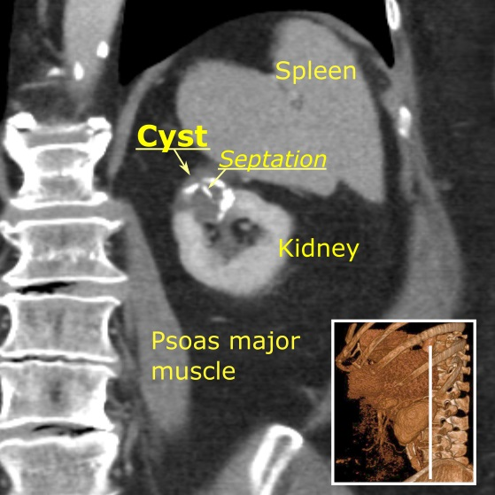
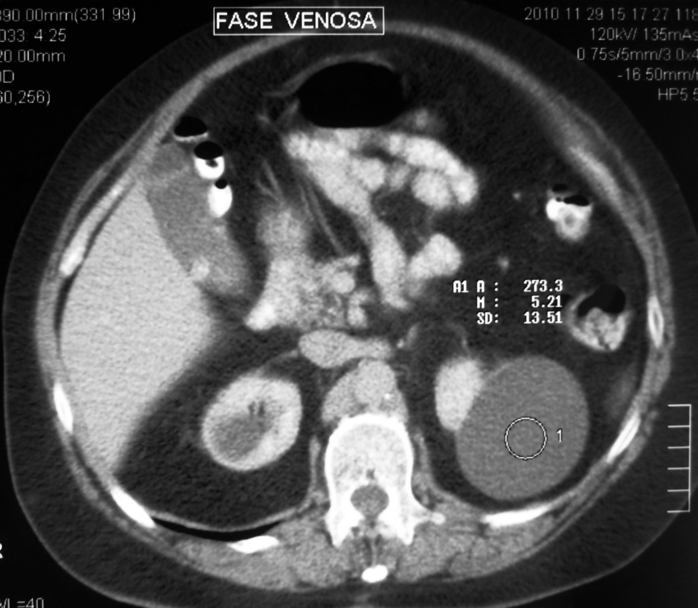

150 — Nang thận Bosniak v2019 & u thận / Bosniak cysts & Renal masses
Tags: pattern:nang-than vung:than score:Bosniak
Mức chắc chắn (certainty): tổng hợp y văn (literature synthesis) — nhóm tự biên từ y văn mở, chưa gắn ca nguyên văn đơn lẻ.
1. Tổng quan — ngấm thật đo bằng HU + thì thận 90–100s
- Ngấm thật (true enhancement): tăng ≥ 20 HU khi đo ROI cùng vị trí trước tiêm vs thì ống thận (nephrographic 90–100s); tăng < 10 HU = giả ngấm (pseudoenhancement); MRI ≥ 15%.
- TẠI SAO thì thận mới chuẩn: nhu mô ngấm đều nhất, vách/nốt ngấm lộ rõ; thì ĐM sớm dễ bỏ sót, thì muộn loãng thuốc.
- U đặc thận: ung thư tế bào sáng (clear cell — giàu mạch, hoại tử) vs nhú (kém ngấm) vs kỵ màu vs u cơ mỡ mạch (AML — mỡ đại thể).
2. Thang Bosniak v2019 (số nhớ nằm lòng)
| Bosniak | Tiêu chí | Ác tính | Xử trí |
|---|---|---|---|
| I | Nang đơn thuần, thành mỏng, không vách/vôi/ngấm | ~0% | Bỏ qua |
| II | Vách mỏng ≤ 3 + vôi nhỏ + nang đặc ≥ 70 HU không tiêm (xuất huyết/protein) | ~0% | Bỏ qua |
| IIF | Nhiều vách (≥ 4) hoặc vách dày nhẵn 3 mm ngấm; theo dõi | 5–10% | CT/MRI 6–12 tháng |
| III | Thành/vách dày ≥ 4 mm ngấm hoặc gồ ghề ≤ 3 mm (góc tù) | ~50% | Cắt bán phần / theo dõi sát |
| IV | Nốt đặc ngấm thuốc (lồi ≥ 4 mm hoặc góc nhọn) | ~90% | Phẫu thuật |

Bosniak IIF: nang 3 cm + vôi hóa thành/vách, không ngấm. Nguồn: Häggström, CC0.
Nguồn: SCiardullo, CC BY-SA 4.0.3. Bảng u đặc thận
| U | Hình ảnh | Chốt |
|---|---|---|
| RCC tế bào sáng | Giàu mạch + hoại tử + huyết khối TM thận | Ngấm mạnh không đều + huyết khối TM |
| RCC nhú | Kém ngấm, đồng nhất | Kém mạch + đa ổ 2 bên |
| AML | Mỡ đại thể trong u | Mỡ = u cơ mỡ mạch (AML) (trừ TSC chảy máu/Wunderlich) |
| Oncocytoma | Sẹo trung tâm + ngấm đều | Không phân biệt chắc với RCC → mổ/sinh thiết |
4. Protocol CT thận
- Trước tiêm (đo HU nền + vôi/mỡ/máu) + thận 90–100s (đo ngấm) + muộn (bài tiết, u đường niệu).
- ROI cùng vị trí 3 thì, tránh vôi/vùng hoại tử khi đo.
5. Cạm bẫy
- Giả ngấm nang nhỏ (< 1 cm) do trung bình thể tích — lát mỏng + MRI xác nhận.
- RCC nang hóa giả Bosniak III — nốt ngấm dù nhỏ cũng lên IV.
- AML nghèo mỡ giả RCC — MRI chemical-shift (mỡ vi thể) + sinh thiết.
6. Tự lượng giá — Blind Quiz
Ca 1 — Nang 3 cm + vôi hóa thành/vách, đo không ngấm. Bosniak mấy?
- Hỏi: vôi hóa có nâng Bosniak không? Ngấm không? Xử trí?
Bấm để hiện đáp án
- Bosniak IIF: vôi hóa + vách nhưng không ngấm — theo dõi 6–12 tháng (vôi hóa đơn độc không lên III).
- Nguồn: Häggström, CC0.
Ca 2 — Nang + nốt đặc ngấm lồi 5 mm góc nhọn: Bosniak mấy? Xử trí? (Bảng mục 2.)
Bấm để hiện đáp án
- Bosniak IV (~90% ác): nốt đặc ngấm — phẫu thuật (đối chiếu ảnh IV trong CREDITS).
Bài liên quan chéo
- 100 – Tổng quan hệ Bụng
- 110 – Giải phẫu bụng (khoang quanh thận)
- 152 – Sỏi/ứ nước (đã có)
- 929 – Gây xơ hóa nang qua da (thận – gan – lách)
Không dùng để chẩn đoán độc lập khi chưa có người hướng dẫn.